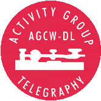

Der Europäische CW Dachverband
The European CW Association
c/o ECM der AGCW-DL
|
Die EuCW ist ein Dachverband europäischer Telegrafieklubs. Ziel der Organisation ist der Informationsaustausch zwischen den Mitgliedsvereinen sowie die Förderung der Morsetelegrafie im Amateurfunk im Allgemeinen. Mitglieder der EuCW sind nicht Einzelpersonen, sondern europäische Telegrafieorganisationen, d.h. reine CW Klubs und auch QRP-Klubs, die von ihrer Natur her auch immer CW einen höchsten Stellenwert einräumen. Auch nicht europäische Organisationen können mit der EuCW assoziiert sein. Jeder Mitgliedsverein benennt eine Kontaktperson (ECM = EuCW Communications Manager) zur Kommunikation mit der EuCW
|
Die AGCW-DL e.V. (kurz AGCW) ist einer der wichtigsten deutschen Telegrafieclubs. Er wurde 1971 gegründet und vertritt etwa 2000 Mitglieder aus Deutschland und anderen Ländern. Die AGCW fördert im Rahmen ihrer Zusammenarbeit mit dem DARC (Deutscher Amateur-Radio-Club) die Belange der Telegrafie. Besonders hat sich die AGCW der Jugendarbeit verschrieben. Daneben tritt die AGCW als Veranstalter von Telegrafiewettbewerben auf. Die EUCW Seiten sind Teil des Webauftritts der AGCW. |
| Offizielle Sprache der EuCW ist Englisch, von daher sind
grundsätzlich alle Informationen erst einmal nur auf Englisch
verfügbar. Bitte habt Verständnis dafür, dass auf
den EuCW Seiten der AGCW (noch) nicht alles auf Deutsch
übersetzt worden ist. Wer Lust hat, beim Übersetzen etwas
zu helfen, möge sich bitte melden.
Alle Informationen auf diesen Seiten erheben werder Anspruch auf Vollständigkeit noch auf Fehlerfreiheit. Für externe Inhalte (Links) wird keinerlei Verantwortung übernommen. Korrekturen, Hinweise und Verbesserungsvorschläge sind erwünscht. Reproduktionen und Übersetzungen seitens der EuCW Klubs sind ausdrücklich erwünscht. Stand: siehe hier. |
 |